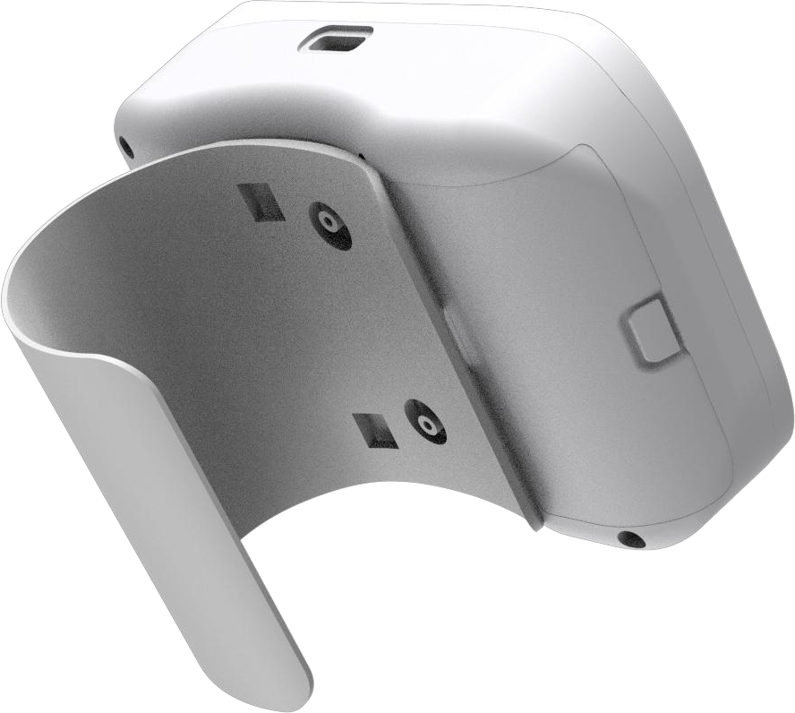
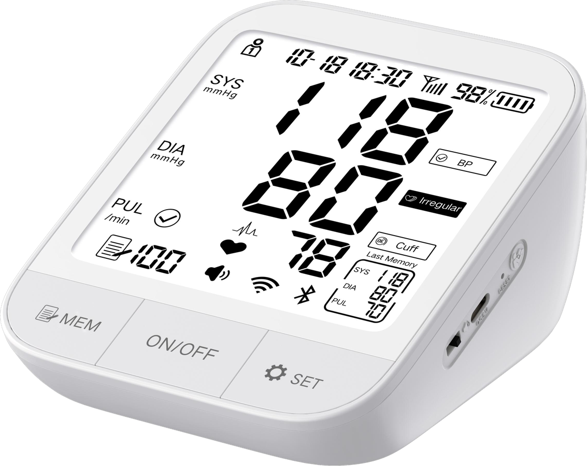

Blood Pressure Monitor Technology
Engineering support for upper arm, wrist, digital and Bluetooth blood pressure monitor OEM programs, built for distributors, importers and private label healthcare brands.

Blood Pressure Monitor Feature System
AXDCARE presents blood pressure monitor technology through product features that buyers can compare across upper arm, wrist, digital and Bluetooth model programs.
 IHBSYS/DIACuff
IHBSYS/DIACuffProduct Feature Display
Make Feature Differences Easy to Explain
For distributors and brand owners, the technology page should explain what changes between product models: display design, memory capacity, power options, cuff package, Bluetooth configuration and packaging language.
Product Model & OEM Options
Private label buyers can prepare a blood pressure monitor program by choosing model type first, then matching product features, package style and documentation needs.
Quality Checkpoints
For B2B buyers, stable production control is as important as product features. AXDCARE structures checks around function, appearance, packaging and shipment readiness.
- Incoming Materials
- Cuff, display, housing and key component review.
- Assembly Control
- In-process function and appearance confirmation.
- Finished Product
- Function, labeling and packaging inspection.
- Export Review
- Carton, documentation and order information check.
Related Blood Pressure Monitor Products
Move from technology review to product model selection.
Upper Arm Blood Pressure Monitor
Core OEM model direction for pharmacy and distributor channels.
View Product
Wrist Blood Pressure Monitor
Compact product option for personal health monitoring brands.
View Series
Digital Blood Pressure Monitor
Specification-led product path for OEM and private label buyers.
Request QuoteExhibition Talking Point
Get OEM QuotePresent a Clear Monitoring Technology Story
Use this page as a trade show and sales reference when explaining AXDCARE blood pressure monitor OEM capability to distributors and brand owners.